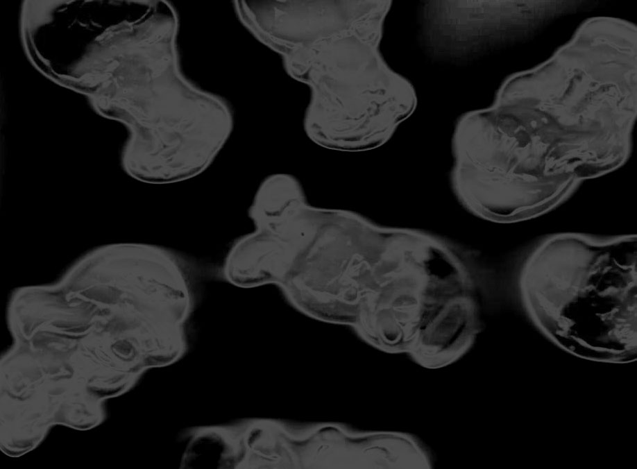
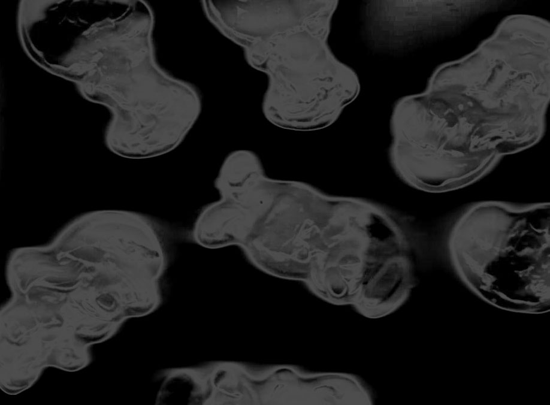

kandilogy
« Le matériel n’est pas important pour moi, ni d’où il vient. J’en ai un peu marre des «il faut» en tarot et spiritualité. Le principal, c’est que lae praticien·ne ait des conventions avec ses cartes et sache les interpréter. Il n’y a pas de bons ni de mauvais outils. C’est ce que tu en fais, l’important. Comment choisir tes outils ? te fier à ton intuition, surtout ne pas écouter les grands pontes de la magie qui te diront que si tu n’as pas [les bons outils] tes sorts sont inefficaces. J’utilise des bougies d’anniversaires pour certains sorts, et les résultats sont là », Lilith Tarot
Au travers de cette production, j’ai voulu initier une pratique personnelle de la sorcellerie. Une certaine vision de la sorcellerie soutient que la magie réside dans l’intention et non dans le matériel, n’importe quelle sorcière peut créer ses propres outils de rituels. Ainsi, avec le matériel dont je disposais, j’ai entrepris de créer des outils rituels inspirés des pierres de lithothérapie : un paquet de bonbons dans un placard, un moule dont le silicone m’était accessible dans ma salle de cours, un micro-ondes, des ustensiles de cuisine. Kandilogy est une proposition plastique de fabrication d’outils sorcellaires dont les bonbons sont le matériau de base.
 
